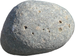

<body style="margin:0; display: flex; flex-direction: row">
  <canvas id="p1" style="height: 100vh; border: 4px solid grey" ></canvas>
  <canvas id="p2" style="height: 100vh; border: 4px solid grey" ></canvas>
  
  <script src="./util.js"> </script>
  <script src="./keyboard.js"> </script>
  <script src="./world.js"> </script>
  <script src="./player.js"> </script>
  <script src="./rock.js"> </script>
  <script src="./pickup.js"> </script>
  <script src="./app.js"> </script>
  <script>
    // what if two canvases, with different translate values to set camera positions, side-by-side?
    // underlying radiuss could then all be fixed which avoids the mess of resizing objects
    window.onload = function() {
      const world = new World()

      for (i = 0; i < 10; i++) {
        const rock = new Rock(
          randNormalDist(70, 30/defaultDeviations),
          randNormalDist(0, 100),
          world.generateSafePosition()
        )
        rock.velocity.x = randNormalDist(0, 10)
        rock.velocity.y = randNormalDist(0, 10)
        world.objects.push(rock)
      }

      world.objects.push(new Pickup(world.generateSafePosition(), 'gravitygun'))

      const player1 = new Player(world.generateSafePosition(), 'blue')
      world.objects.push(player1)

      const player2 = new Player(world.generateSafePosition(), 'red')
      world.objects.push(player2)

      let canvas = new OffscreenCanvas(world.width, world.height)
      let ctx = canvas.getContext('2d')
      let radius
      let camera1 = document.getElementById('p1')
      radius = camera1.getClientRects()[0]
      camera1.width = radius.width
      camera1.height = radius.height
      let camera2 = document.getElementById('p2')
      radius = camera2.getClientRects()[0]
      camera2.width = radius.width
      camera2.height = radius.height


      let cam1ctx = camera1.getContext('2d')
      let cam2ctx = camera2.getContext('2d')

      let deathJitter = 1;
      function drawPlayerCanvas(camera, ctx, player) {
        const healthBarBorder = 30
        let widthfraction

        ctx.fillStyle = '#333';
        ctx.fillRect(0, 0, camera.width, camera.height);
        ctx.drawImage(
          canvas,
          // center camera on player
          player.position.x - (camera.width / 2),
          player.position.y - (camera.height / 2),
          camera.width,
          camera.height,
          0,0,camera.width,camera.height
        )

        // draw loss text
        if (!player.alive) {
          ctx.fillStyle='white'
          ctx.font = 'bold 48px serif';
          deathJitter += Math.random() > 0.7 ? 1 : -1
          if (deathJitter > 20) {
            deathJitter = 20
          }
          if (deathJitter < 0) {
            deathJitter = 2
          }
          ctx.fillText(
            "YOU DIED",
            camera.width / 2 + (deathJitter-Math.random()*2*deathJitter),
            camera.height / 2 + (deathJitter-Math.random()*2*deathJitter)
          )
        } else if (player.shieldCapacity <= 0) {
          // draw health bar
          ctx.strokeStyle = player.color;
          if (Math.random() > 0.5) {
            ctx.strokeStyle = '#ddd';
          }
          ctx.strokeRect(healthBarBorder, healthBarBorder, camera.width - 2 * healthBarBorder, healthBarBorder);
        } else {
          ctx.strokeStyle = player.color;
          ctx.strokeRect(healthBarBorder, healthBarBorder, camera.width - 2 * healthBarBorder, healthBarBorder);

          ctx.fillStyle = player.color;
          widthfraction = player.shieldCapacity / player.shieldCapacityMax;
          ctx.fillRect(
            healthBarBorder, healthBarBorder,
            widthfraction*(camera.width-healthBarBorder-healthBarBorder), healthBarBorder
          );
        }
      }

      function drawCanvas() {
        ctx.fillStyle = '#000';
        ctx.fillRect(0, 0, canvas.width, canvas.height);
        ctx.save()
        world.objects.forEach((object) => {
          if (object.draw) {
            ctx.save()
            object.draw(ctx, world)
            ctx.restore()
          }
        })

        ctx.restore()

        world.starfield.forEach(({x,y,radius,hue,sat}) => {
          ctx.beginPath();
          ctx.arc(x, y, radius, 0, 2 * Math.PI);
          ctx.fillStyle = "hsl(" + hue + ", " + sat + "%, 88%)";
          ctx.fill();
        })

        drawPlayerCanvas(camera1, cam1ctx, player1)
        drawPlayerCanvas(camera2, cam2ctx, player2)
      }

      function step(time) {
        // mutate the state by 'time'
        world.step(time)

        player1.step(time, {
          forward: consumeKey('w')- consumeKey('s'),
          rotate: consumeKey('d') - consumeKey('a'),
          grapple: consumeKey('q'),
          gravgun: consumeKey('e'),
        })
        player2.step(time, {
          forward: consumeKey('i')- consumeKey('k'),
          rotate: consumeKey('l') - consumeKey('j'),
          grapple: consumeKey('u'),
          gravgun: consumeKey('o'),
        })
      }

      (function loop(prevMs) {
        const nowMs = window.performance.now();
        requestAnimationFrame(loop.bind(null, nowMs));
        const deltaMs = nowMs-prevMs;
        step(deltaMs);
        drawCanvas();
      })(window.performance.now())
    }

  </script>
</body>
